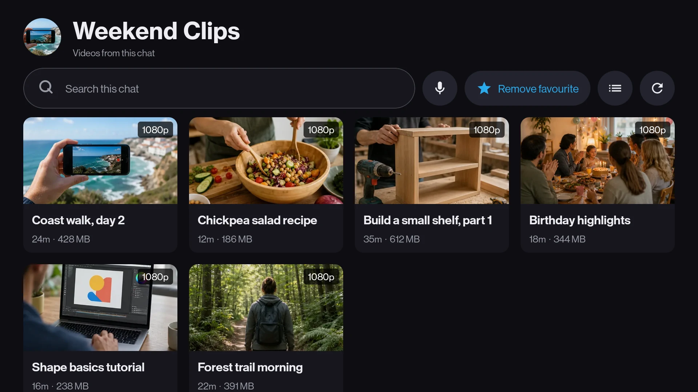
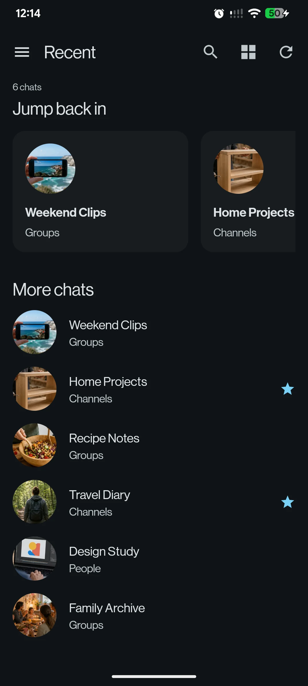
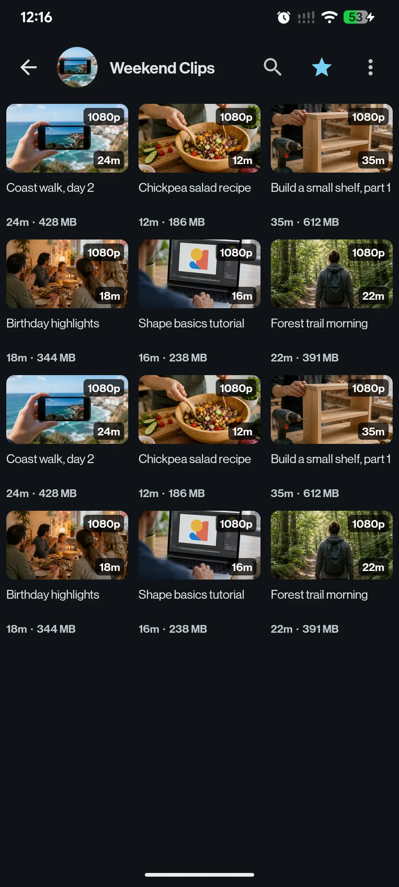
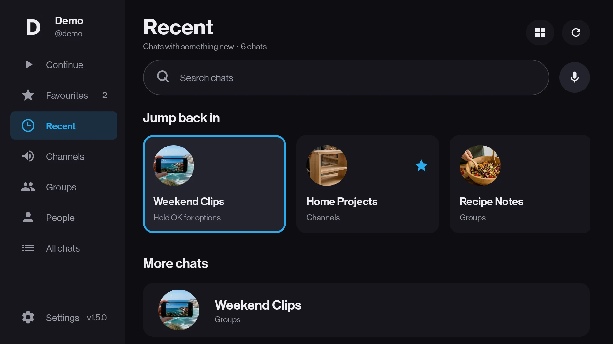
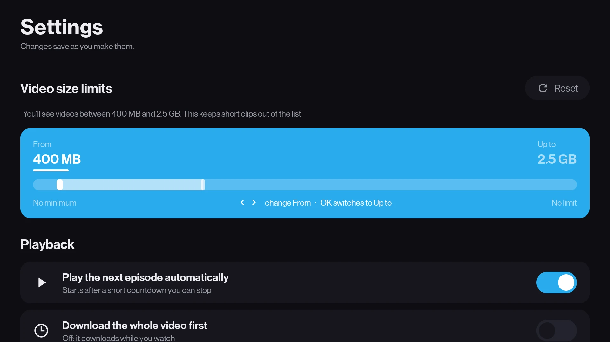

Free and open source, for Android
Your Telegram videos, on the TV.
Press play and it starts in seconds. The rest downloads while you watch.
Download the APKOne universal APK, one sign-in, both screens. View the source How to install

- Platform
- Android 8.0 and above, TV or phone
- Sign in
- QR code, your own account
- Tested on
- Mi TV Stick with 1 GB of RAM, and a phone
- Costs
- Nothing. No server, no bot
Download
One file for every supported device, television or phone. No chip type to look up.
Latest release
Checking GitHub
Loading release information from GitHub.
One download, no guesswork. The universal APK includes the native code needed by 32-bit and 64-bit televisions, by phones, and by x86_64 emulators.
Release notes
Previous releases
What it looks like
Four screens, in the order you meet them. Every picture is the app itself, filled with demo content that belongs to nobody.




What it does
Built for one television and one remote, and for one thumb.
Watching
- Starts in seconds and seeks properly. Skipping ahead re-aims the download instead of waiting for it. A setting fetches the whole video first if your connection would rather.
- Plays real-world media files. MKV, MP4, AVI and TS. Embedded subtitles, image-based ones included. Multiple audio tracks you can switch during playback.
- Remembers where you stopped, video by video, with a Continue watching row waiting on launch.
- Keeps one video on the device. An 8 GB stick cannot hold a library, so the previous one goes and the app tells you how much that freed. Coming back to a video you stopped half way through keeps the half already on disk.
- Is a phone app on a phone. The same library, drawn the way Android draws things in the hand.
Browsing
- Shows media, not messages. Open a chat or channel and TMPlayer filters it down to playable videos, including video files sent as documents.
- Understands episode filenames. During playback, previous and next controls move between neighbouring episodes already present in the same chat, and when one finishes the next starts on its own after a countdown you can stop.
- Forgives how you type. Search is matched word by word, so an accent nobody types, two letters the wrong way round, or one wrong keyword among right ones still finds the thing.
- Search by voice, using the microphone already in your remote. Star the chats you watch from and they sit one press away.
- Updates itself. It notices a newer release on GitHub and installs it, and signing out clears everything it ever kept.
How to install
Four steps, on a television or on a phone. You only do them once.
-
Allow apps from outside the store
On a television: Settings then Device Preferences then About, and press Build seven times. Now turn on Unknown sources for whichever app you use to copy the file over.
On a phone: nothing to do yet. Android asks you the first time you open the file, and you say yes then.
-
Get the file onto the device
On a phone, tap the download link above and open the file when it lands. On a television it is easiest with a free app from the Play Store, such as Downloader or Send files to TV, pointed at the same link. With a computer on the same wifi,
adbworks too:adb connect <tv-ip>:5555 adb install TMPlayer-<version>-universal.apkFor that one, turn on network debugging in Developer options first.
-
Sign in
On a television it shows a QR code: open Telegram on your phone, go to Settings, then Devices, then Link Desktop Device, and point the camera at the screen. Nothing to type with the remote.
On a phone it asks for your number instead, with the country picker and the code boxes Telegram itself uses. The QR route is still there, for an account that lives on another handset.
-
Pick a chat and press play
Your chats open into grids or rows of their playable videos: big cards and a focus ring on a television, dense tiles under your thumb on a phone. Choose one and it starts in a few seconds.
INSTALL.md covers the sideloading steps in full, plus the remote-control reference and troubleshooting.
Be clear about what this is
A player pointed at an account you already have.
What it is
- A player for your own Telegram account, signed in through Telegram's own official library.
- A way to watch videos in the chats and channels you have already joined, without waiting for the whole file or moving it off a phone first.
- Free and open source. You can read every line and build it yourself.
What it is not
- Not a media service or channel directory. It hosts, uploads, sells and recommends nothing. There is no server and no bot.
- Not a Telegram app. You cannot read messages, reply, or send anything.
- Not affiliated with, endorsed by, or connected to Telegram FZ-LLC. What you watch, and where it came from, is your responsibility.
Common questions
The four that get asked most.
Do I have to wait for the video to download?
No. It starts in seconds and downloads while you watch. If your connection cannot keep up, a setting in the app will fetch the whole video first instead.
Is there a server or a bot involved?
Neither. The TV talks to Telegram directly, signed in as you. Nothing passes through anything of mine.
Which file do I download?
Download the universal APK. The same file works on every supported device, television or phone, including 32-bit and 64-bit ones.
Can I read my messages on it?
No. It only ever shows the videos in your chats. You cannot read, reply or send anything from it.
Missing something?
If the app will not do what you wanted, or your TV stick or handset misbehaves, I would rather hear about it.
Tell me what you wanted the app to do, and it might do it next release.
Say what you were trying to watch, what happened instead, and which device you are on. That is usually enough to find the problem.
Built by Nevil. More of what I make is at nevil.dev.